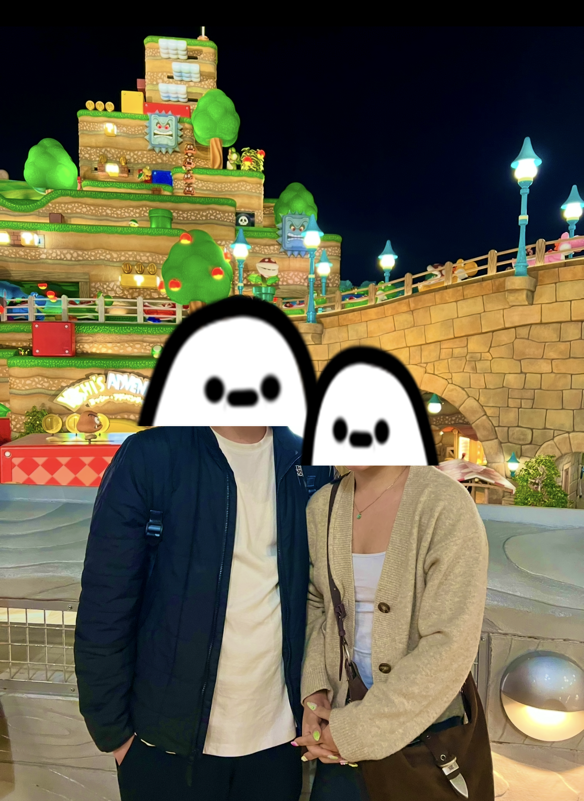
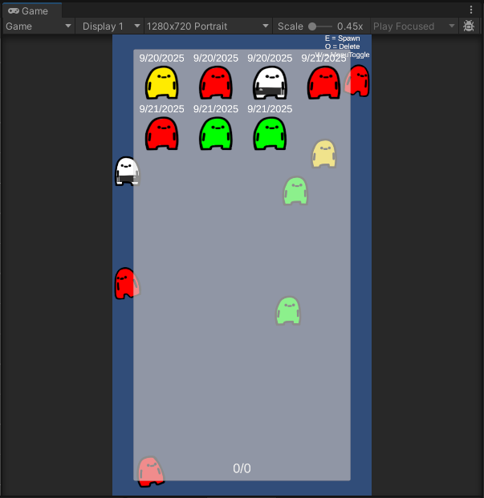

entry #2: glhf-grow-journalapp
After wrapping up those small tasks at the end of September, I decided
to step back and take most of October off—partly to avoid burning out
and partly because I had a trip to Japan planned. And wow,
NintendoLand at Universal Studios Japan was amazing. Seeing it in
person is completely different from watching videos—it’s put together
so well. The trip ended up being a much-needed reset; I explored a
lot, enjoyed the atmosphere, and came back wanting to return again
(and hopefully play some Street Fighter with the locals next time).
The whole experience was refreshing, though getting back home did take
a bit of mental readjustment as I eased myself back into work and
project mode.
Now that I’ve had time to rest and settle back into my usual rhythm,
I’m feeling fully motivated again. The break really helped recharge my
energy and gave me a chance to think about the project from a broader
perspective. I’m excited to jump back into development with a clearer
mindset and renewed enthusiasm. I also realized I need a better way to
format these blog dates—so I’m thinking about shifting to a
monthly update format instead. (I think that's the plan, and changes were made
already) Also Megabonk is really fun.

During this period, I have to acknowledge some neglect on my part. I
took a small, unplanned break and got caught up in random things in
daily life, so development naturally slowed down. As a result,
September and October ended up being a lighter month for progress,
though a few meaningful updates still made it into the project:
Implemented color variations for base characters:
Each newly spawned base-character now has a small chance of appearing
with an alternate color. This adds more visual diversity and makes the
character generation system feel more dynamic, while also pushing me
to refine parts of the underlying spawning logic.
Started developing a user character menu:
I began creating a menu that displays all of a user’s accumulated
characters, organized by their creation time. This helps visually
track character progression and provides a foundation for future UI
features.
Identified UI scalability limits:
The initial version of the character menu could only support up to 32
characters before breaking due to layout constraints. Even though this
limitation needs fixing, the early build helped reveal important UI
scalability issues that I’ll address in future updates.
